136 proposals in 25 posts; 6 not high confidence (orange edge).
Compare each image with its LaTeX render, then mark approved y/n in _migration/phase7-equations.tsv
(or fix the LaTeX in its new column) and re-run make_phase7_review.py.
2014-10-14-dark-matter-and-machine-learning (7)
angle-score.png · high
Image 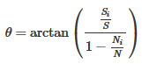
LaTeX \[\theta = \arctan\left(\frac{\frac{S_i}{S}}{1 - \frac{N_i}{N}}\right)\]
\theta = \arctan\left(\frac{\frac{S_i}{S}}{1 - \frac{N_i}{N}}\right)
bayes-theorem.png · high
Image 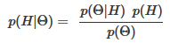
LaTeX \[p(H|\Theta) = \frac{p(\Theta|H)\; p(H)}{p(\Theta)}\]
p(H|\Theta) = \frac{p(\Theta|H)\; p(H)}{p(\Theta)}
emi-bayes.png · high
Image 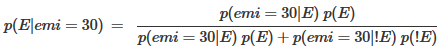
LaTeX \[p(E|emi = 30) = \frac{p(emi = 30|E)\; p(E)}{p(emi = 30|E)\; p(E) + p(emi = 30|!E)\; p(!E)}\]
p(E|emi = 30) = \frac{p(emi = 30|E)\; p(E)}{p(emi = 30|E)\; p(E) + p(emi = 30|!E)\; p(!E)}
log-likelihood.png · high
Image 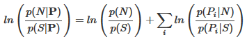
LaTeX \[ln\left(\frac{p(N|\mathbf{P})}{p(S|\mathbf{P})}\right) = ln\left(\frac{p(N)}{p(S)}\right) + \sum_i ln\left(\frac{p(P_i|N)}{p(P_i|S)}\right)\]
ln\left(\frac{p(N|\mathbf{P})}{p(S|\mathbf{P})}\right) = ln\left(\frac{p(N)}{p(S)}\right) + \sum_i ln\left(\frac{p(P_i|N)}{p(P_i|S)}\right) 'ln' was italic in the image, so kept as italic letters rather than \ln.
noise-bayes.png · high
Image 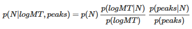
LaTeX \[p(N|logMT, peaks) = p(N)\,\frac{p(logMT|N)}{p(logMT)}\,\frac{p(peaks|N)}{p(peaks)}\]
p(N|logMT, peaks) = p(N)\,\frac{p(logMT|N)}{p(logMT)}\,\frac{p(peaks|N)}{p(peaks)}
score-alt.png · high
Image 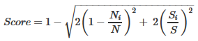
LaTeX \[Score = 1 - \sqrt{2\left(1 - \frac{N_i}{N}\right)^2 + 2\left(\frac{S_i}{S}\right)^2}\]
Score = 1 - \sqrt{2\left(1 - \frac{N_i}{N}\right)^2 + 2\left(\frac{S_i}{S}\right)^2}
score.png · high
Image 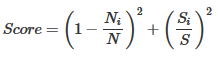
LaTeX \[Score = \left(1 - \frac{N_i}{N}\right)^2 + \left(\frac{S_i}{S}\right)^2\]
Score = \left(1 - \frac{N_i}{N}\right)^2 + \left(\frac{S_i}{S}\right)^2
2010-12-29-rush-hour (2)
Norm-eqn.png · medium
Image 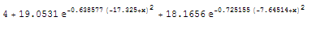
LaTeX \[4 + 19.0531\, e^{-0.638577\,(-17.325 + x)^2} + 18.1656\, e^{-0.725155\,(-7.64514 + x)^2}\]
4 + 19.0531\, e^{-0.638577\,(-17.325 + x)^2} + 18.1656\, e^{-0.725155\,(-7.64514 + x)^2} Small Mathematica output; check the digits of the four constants.
trigplot-eqn-crop.png · medium
Image 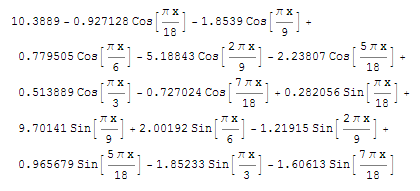
LaTeX \[\begin{aligned} &10.3889 - 0.927128\cos\left[\tfrac{\pi x}{18}\right] - 1.8539\cos\left[\tfrac{\pi x}{9}\right] + {} \\ &0.779505\cos\left[\tfrac{\pi x}{6}\right] - 5.18843\cos\left[\tfrac{2\pi x}{9}\right] - 2.23807\cos\left[\tfrac{5\pi x}{18}\right] + {} \\ &0.513889\cos\left[\tfrac{\pi x}{3}\right] - 0.727024\cos\left[\tfrac{7\pi x}{18}\right] + 0.282056\sin\left[\tfrac{\pi x}{18}\right] + {} \\ &9.70141\sin\left[\tfrac{\pi x}{9}\right] + 2.00192\sin\left[\tfrac{\pi x}{6}\right] - 1.21915\sin\left[\tfrac{2\pi x}{9}\right] + {} \\ &0.965679\sin\left[\tfrac{5\pi x}{18}\right] - 1.85233\sin\left[\tfrac{\pi x}{3}\right] - 1.60613\sin\left[\tfrac{7\pi x}{18}\right] \end{aligned}\]
\begin{aligned} &10.3889 - 0.927128\cos\left[\tfrac{\pi x}{18}\right] - 1.8539\cos\left[\tfrac{\pi x}{9}\right] + {} \\ &0.779505\cos\left[\tfrac{\pi x}{6}\right] - 5.18843\cos\left[\tfrac{2\pi x}{9}\right] - 2.23807\cos\left[\tfrac{5\pi x}{18}\right] + {} \\ &0.513889\cos\left[\tfrac{\pi x}{3}\right] - 0.727024\cos\left[\tfrac{7\pi x}{18}\right] + 0.282056\sin\left[\tfrac{\pi x}{18}\right] + {} \\ &9.70141\sin\left[\tfrac{\pi x}{9}\right] + 2.00192\sin\left[\tfrac{\pi x}{6}\right] - 1.21915\sin\left[\tfrac{2\pi x}{9}\right] + {} \\ &0.965679\sin\left[\tfrac{5\pi x}{18}\right] - 1.85233\sin\left[\tfrac{\pi x}{3}\right] - 1.60613\sin\left[\tfrac{7\pi x}{18}\right] \end{aligned} Mathematica output (Cos[...], Sin[...]) set as \cos/\sin with square brackets; check the 15 constants.
2012-05-29-sexuality-and-population-dynamics (17)
98729_0.png · high
Image 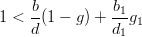
LaTeX \[1 < \frac{b}{d}(1 - g) + \frac{b_1}{d_1}g_1\]
1 < \frac{b}{d}(1 - g) + \frac{b_1}{d_1}g_1
98755_0.png · high
Image 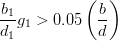
LaTeX \[\frac{b_1}{d_1}g_1 > 0.05\left(\frac{b}{d}\right)\]
\frac{b_1}{d_1}g_1 > 0.05\left(\frac{b}{d}\right)
complex-coupled.png · high
Image LaTeX \[\begin{aligned} \dot{x} &= [b_1g_1 - d_1]x + [bg]y \\ \dot{y} &= [b_1(1 - g_1)]x + [b(1 - g) - d]y \end{aligned}\]
\begin{aligned} \dot{x} &= [b_1g_1 - d_1]x + [bg]y \\ \dot{y} &= [b_1(1 - g_1)]x + [b(1 - g) - d]y \end{aligned}
gen-avalues.png · high
Image LaTeX \[\begin{aligned} A_{z_1} &= \frac{x_0(a_{11} - a_{12} + a_{21} - a_{22}) - z_0(\lambda_2 - a_{12} - a_{22})}{\lambda_1 - \lambda_2} \\ A_{z_2} &= \frac{x_0(a_{11} - a_{12} + a_{21} - a_{22}) - z_0(\lambda_1 - a_{12} - a_{22})}{\lambda_2 - \lambda_1} \end{aligned}\]
\begin{aligned} A_{z_1} &= \frac{x_0(a_{11} - a_{12} + a_{21} - a_{22}) - z_0(\lambda_2 - a_{12} - a_{22})}{\lambda_1 - \lambda_2} \\ A_{z_2} &= \frac{x_0(a_{11} - a_{12} + a_{21} - a_{22}) - z_0(\lambda_1 - a_{12} - a_{22})}{\lambda_2 - \lambda_1} \end{aligned}
gen-condition.png · high
Image LaTeX \[a_{11}a_{22} - a_{12}a_{21} < 0\]
a_{11}a_{22} - a_{12}a_{21} < 0
gen-coupled.png · high
Image LaTeX \[\begin{aligned} \dot{x} &= a_{11}x + a_{12}y \\ \dot{y} &= a_{21}x + a_{22}y \end{aligned}\]
\begin{aligned} \dot{x} &= a_{11}x + a_{12}y \\ \dot{y} &= a_{21}x + a_{22}y \end{aligned}
gen-lambda.png · high
Image LaTeX \[\lambda_{1,2} = \frac{(a_{11} + a_{22}) \pm \sqrt{(a_{11} + a_{22})^2 - 4(a_{11}a_{22} - a_{12}a_{21})}}{2}\]
\lambda_{1,2} = \frac{(a_{11} + a_{22}) \pm \sqrt{(a_{11} + a_{22})^2 - 4(a_{11}a_{22} - a_{12}a_{21})}}{2}
gen-lim-xz.png · high
Image LaTeX \[\lim_{t \to \infty} \frac{x(t)}{z(t)} = \frac{z_0a_{12} - x_0(\lambda_2 + a_{12} - a_{11})}{x_0(a_{11} - a_{12} + a_{21} - a_{22}) - z_0(\lambda_2 - a_{12} - a_{22})}\]
\lim_{t \to \infty} \frac{x(t)}{z(t)} = \frac{z_0a_{12} - x_0(\lambda_2 + a_{12} - a_{11})}{x_0(a_{11} - a_{12} + a_{21} - a_{22}) - z_0(\lambda_2 - a_{12} - a_{22})}
gen-lim-z.png · high
Image LaTeX \[\lim_{t \to \infty} z(t) = A_{z_1}e^{\lambda_1 t}\]
\lim_{t \to \infty} z(t) = A_{z_1}e^{\lambda_1 t}
gen-pop-diff.png · high
Image LaTeX \[\ddot{z} = (a_{11} + a_{22})\dot{z} - (a_{11}a_{22} - a_{12}a_{21})z\]
\ddot{z} = (a_{11} + a_{22})\dot{z} - (a_{11}a_{22} - a_{12}a_{21})z
gen-pop.png · high
Image LaTeX \[z(t) = A_{z_1}e^{\lambda_1 t} + A_{z_2}e^{\lambda_2 t}\]
z(t) = A_{z_1}e^{\lambda_1 t} + A_{z_2}e^{\lambda_2 t}
simple-condition.png · high
Image LaTeX \[g < 1 - \frac{d}{b}\]
g < 1 - \frac{d}{b}
simple-lambda-a.png · high
Image LaTeX \[\begin{aligned} \lambda_1 &= b(1 - g) - d & \qquad \lambda_2 &= -d \\[1ex] A_{z_1} &= \frac{z_0 - x_0}{1 - g} & \qquad A_{z_2} &= \frac{x_0 - gz_0}{1 - g} \end{aligned}\]
\begin{aligned} \lambda_1 &= b(1 - g) - d & \qquad \lambda_2 &= -d \\[1ex] A_{z_1} &= \frac{z_0 - x_0}{1 - g} & \qquad A_{z_2} &= \frac{x_0 - gz_0}{1 - g} \end{aligned}
simple-lim-xz.png · high
Image LaTeX \[\lim_{t \to \infty} \frac{x}{z} = g\]
\lim_{t \to \infty} \frac{x}{z} = g
simple-lim-z.png · high
Image LaTeX \[\lim_{t \to \infty} z(t) = \frac{z_0 - x_0}{1 - g}e^{[b(1-g)-d]t}\]
\lim_{t \to \infty} z(t) = \frac{z_0 - x_0}{1 - g}e^{[b(1-g)-d]t}
simple-pop.png · high
Image LaTeX \[z(t) = \frac{z_0 - x_0}{1 - g}e^{[b(1-g)-d]t} + \frac{x_0 - gz_0}{1 - g}e^{-dt}\]
z(t) = \frac{z_0 - x_0}{1 - g}e^{[b(1-g)-d]t} + \frac{x_0 - gz_0}{1 - g}e^{-dt}
simpled-coupled.png · high
Image LaTeX \[\begin{aligned} \dot{x} &= [-d]x + [bg]y \\ \dot{y} &= [b(1 - g) - d]y \end{aligned}\]
\begin{aligned} \dot{x} &= [-d]x + [bg]y \\ \dot{y} &= [b(1 - g) - d]y \end{aligned}
2012-07-02-sharing-burger-between-three (15)
103118_0.png · high
Image LaTeX \[\cos x = \sum_{n=0} \frac{(-1)^n}{(2n)!}x^{2n} = 1 - \frac{x^2}{2!} + \frac{x^4}{4!} - \frac{x^6}{6!} + \cdots\]
\cos x = \sum_{n=0} \frac{(-1)^n}{(2n)!}x^{2n} = 1 - \frac{x^2}{2!} + \frac{x^4}{4!} - \frac{x^6}{6!} + \cdots The image's sum has no upper limit; kept that way.
103119_0.png · high
Image LaTeX \[x_{n+1} = \frac{1}{2}\left(x_n + \frac{S}{x_n}\right)\]
x_{n+1} = \frac{1}{2}\left(x_n + \frac{S}{x_n}\right)
103120_0.png · high
Image LaTeX \[\begin{aligned} f(x) &= \sum_{n=0} \frac{f^{(n)}(a)}{n!}(x - a)^n \\ &= f(a) + \frac{f'(a)}{1!}(x - a) + \frac{f''(a)}{2!}(x - a)^2 + \frac{f^{(3)}(a)}{3!}(x - a)^3 + \cdots \end{aligned}\]
\begin{aligned} f(x) &= \sum_{n=0} \frac{f^{(n)}(a)}{n!}(x - a)^n \\ &= f(a) + \frac{f'(a)}{1!}(x - a) + \frac{f''(a)}{2!}(x - a)^2 + \frac{f^{(3)}(a)}{3!}(x - a)^3 + \cdots \end{aligned}
103171_0.png · high
Image LaTeX \[\begin{aligned} \sin(150) = \sin(180 - 30) &= \sin(180)\cos(-30) + \sin(-30)\cos(180) \\ &= (0)\left(\frac{\sqrt{3}}{2}\right) \;+\; (-0.5)(-1) \;=\; 0.5 \end{aligned}\]
\begin{aligned} \sin(150) = \sin(180 - 30) &= \sin(180)\cos(-30) + \sin(-30)\cos(180) \\ &= (0)\left(\frac{\sqrt{3}}{2}\right) \;+\; (-0.5)(-1) \;=\; 0.5 \end{aligned}
103172_0.png · high
Image LaTeX \[\cos(a + b) = \cos(a)\cos(b) - \sin(a)\sin(b)\]
\cos(a + b) = \cos(a)\cos(b) - \sin(a)\sin(b)
103174_0.png · high
Image LaTeX \[\begin{aligned} \cos(75) = \cos(45 + 30) &= \cos(45)\cos(30) - \sin(45)\sin(30) \\ &= \left(\frac{1}{\sqrt{2}}\right)\left(\frac{\sqrt{3}}{2}\right) \;-\; \left(\frac{1}{\sqrt{2}}\right)\left(\frac{1}{2}\right) \;=\; \frac{\sqrt{3} - 1}{2\sqrt{2}} \end{aligned}\]
\begin{aligned} \cos(75) = \cos(45 + 30) &= \cos(45)\cos(30) - \sin(45)\sin(30) \\ &= \left(\frac{1}{\sqrt{2}}\right)\left(\frac{\sqrt{3}}{2}\right) \;-\; \left(\frac{1}{\sqrt{2}}\right)\left(\frac{1}{2}\right) \;=\; \frac{\sqrt{3} - 1}{2\sqrt{2}} \end{aligned}
Taylor-sin-alt.png · high
Image LaTeX \[\begin{aligned} \sin(x) &= \sum_{n=0} \frac{f^{(n)}(\pi)}{n!}(x - \pi)^n \\ &= sin(\pi) + \frac{cos(\pi)}{1!}(x - \pi) + \frac{-sin(\pi)}{2!}(x - \pi)^2 + \frac{-cos(\pi)}{3!}(x - \pi)^3 + \cdots \\[1ex] &= (\pi - x) - \frac{(\pi - x)^3}{3!} + \frac{(\pi - x)^5}{5!} - \frac{(\pi - x)^7}{7!} + \cdots \end{aligned}\]
\begin{aligned} \sin(x) &= \sum_{n=0} \frac{f^{(n)}(\pi)}{n!}(x - \pi)^n \\ &= sin(\pi) + \frac{cos(\pi)}{1!}(x - \pi) + \frac{-sin(\pi)}{2!}(x - \pi)^2 + \frac{-cos(\pi)}{3!}(x - \pi)^3 + \cdots \\[1ex] &= (\pi - x) - \frac{(\pi - x)^3}{3!} + \frac{(\pi - x)^5}{5!} - \frac{(\pi - x)^7}{7!} + \cdots \end{aligned} The middle line's sin/cos were italic in the image; kept as italic letters.
area-cut.png · high
Image LaTeX \[A_{cut} = \frac{x}{2}r^2 - \frac{1}{2}r^2\sin(x)\]
A_{cut} = \frac{x}{2}r^2 - \frac{1}{2}r^2\sin(x)
area-seg.png · high
Image LaTeX \[A_{seg} = \frac{x}{2}r^2\]
A_{seg} = \frac{x}{2}r^2
area-tri.png · high
Image LaTeX \[A_{tri} = \frac{1}{2}r^2\sin(x)\]
A_{tri} = \frac{1}{2}r^2\sin(x)
eqn-1.png · high
Image LaTeX \[\frac{x}{2}r^2 - \frac{r^2}{2}\sin(x) = \frac{\pi}{3}r^2\]
\frac{x}{2}r^2 - \frac{r^2}{2}\sin(x) = \frac{\pi}{3}r^2
eqn-2.png · high
Image LaTeX \[\sin(x) = x - \frac{2\pi}{3}\]
\sin(x) = x - \frac{2\pi}{3}
eqn-3.png · high
Image LaTeX \[\frac{l}{r} = \cos\left(\frac{x}{2}\right)\]
\frac{l}{r} = \cos\left(\frac{x}{2}\right)
sin-mult.png · high
Image LaTeX \[\sin(a + b) = \sin(a)\cos(b) + \sin(b)\cos(a)\]
\sin(a + b) = \sin(a)\cos(b) + \sin(b)\cos(a)
sin-taylor.png · high
Image LaTeX \[\begin{aligned} (\pi - x) - \frac{(\pi - x)^3}{3!} + \frac{(\pi - x)^5}{5!} &= x - \frac{2\pi}{3} \\ \frac{5\pi}{3} - 2x - \frac{(\pi - x)^3}{3!} + \frac{(\pi - x)^5}{5!} &= 0 \end{aligned}\]
\begin{aligned} (\pi - x) - \frac{(\pi - x)^3}{3!} + \frac{(\pi - x)^5}{5!} &= x - \frac{2\pi}{3} \\ \frac{5\pi}{3} - 2x - \frac{(\pi - x)^3}{3!} + \frac{(\pi - x)^5}{5!} &= 0 \end{aligned}
2011-07-30-social-posting-part-one-whos-online (6)
M-def.png · high
Image LaTeX \[M_{ij} = \begin{cases} 1 & : \;\; i \textit{ follows } j \\ 0 & : \;\; \textit{otherwise} \end{cases}\]
M_{ij} = \begin{cases} 1 & : \;\; i \textit{ follows } j \\ 0 & : \;\; \textit{otherwise} \end{cases}
T-def-1.png · high
Image LaTeX \[T_i(n) = \begin{cases} 1 & : \;\; i \textit{ posts at time } n \\ 0 & : \;\; \textit{otherwise} \end{cases}\]
T_i(n) = \begin{cases} 1 & : \;\; i \textit{ posts at time } n \\ 0 & : \;\; \textit{otherwise} \end{cases}
Tni-defs.png · high
Image LaTeX \[T_i(n) = \begin{cases} 1 & : \;\; W_i \cdot T(n - 1) \ge \frac{1}{2} \\[1ex] 0 & : \;\; \textit{otherwise} \end{cases}\]
T_i(n) = \begin{cases} 1 & : \;\; W_i \cdot T(n - 1) \ge \frac{1}{2} \\[1ex] 0 & : \;\; \textit{otherwise} \end{cases}
W-def-alt.png · medium
Image LaTeX \[W_{ij} = \begin{cases} 2S & : \;\; \sum^{j} W'_{ij} = 0 \\ S & : \;\; \textit{otherwise} \end{cases} \qquad \textit{with} \;\; S = \frac{W'_{ij}}{\sum^{j} |W'_{ij}|}\]
W_{ij} = \begin{cases} 2S & : \;\; \sum^{j} W'_{ij} = 0 \\ S & : \;\; \textit{otherwise} \end{cases} \qquad \textit{with} \;\; S = \frac{W'_{ij}}{\sum^{j} |W'_{ij}|} The sums show only a 'j' above the sigma (no lower limit); kept that way.
W-def.png · high
Image LaTeX \[W_{ij} = \frac{M_{ij}}{\sum^{j} M_{ij}}\]
W_{ij} = \frac{M_{ij}}{\sum^{j} M_{ij}} The sum shows only a 'j' above the sigma; kept that way.
coherence-eqn-simple.png · high
Image LaTeX \[T(n) = W \cdot T(n - 1)\]
T(n) = W \cdot T(n - 1)
2011-07-31-social-posting-part-two-we-post (6)
alpha-beta.png · high
Image LaTeX \[\alpha = \begin{pmatrix} \alpha_1 & 0 & 0 & 0 \\ 0 & \alpha_2 & 0 & 0 \\ 0 & 0 & \alpha_3 & 0 \\ 0 & 0 & 0 & \alpha_4 \end{pmatrix} \qquad \beta = \begin{pmatrix} \beta_1 \\ \beta_2 \\ \beta_3 \\ \beta_4 \end{pmatrix}\]
\alpha = \begin{pmatrix} \alpha_1 & 0 & 0 & 0 \\ 0 & \alpha_2 & 0 & 0 \\ 0 & 0 & \alpha_3 & 0 \\ 0 & 0 & 0 & \alpha_4 \end{pmatrix} \qquad \beta = \begin{pmatrix} \beta_1 \\ \beta_2 \\ \beta_3 \\ \beta_4 \end{pmatrix}
alpha-definition.png · high
Image LaTeX \[\alpha_i = \frac{\bar{T}_i - \beta_i}{W_i \cdot \bar{T}}\]
\alpha_i = \frac{\bar{T}_i - \beta_i}{W_i \cdot \bar{T}}
coherence-eqn-full-alt.png · high
Image LaTeX \[T(n) = \alpha \cdot W \cdot T(n - 1) + \beta\]
T(n) = \alpha \cdot W \cdot T(n - 1) + \beta
example-external-breakingnews.png · high
Image LaTeX \[E_i(n) = \begin{cases} 3 & : \;\; 2 \le n \le 5 \\ 1 & : \;\; \textit{otherwise} \end{cases} \qquad \forall\, i\]
E_i(n) = \begin{cases} 3 & : \;\; 2 \le n \le 5 \\ 1 & : \;\; \textit{otherwise} \end{cases} \qquad \forall\, i
example-external-conditions.png · medium
Image LaTeX \[\begin{aligned} E_1(n) &= \{\, 1 \;\; : \;\; n \ge 0 & \qquad E_2(n) &= \{\, 1 \;\; : \;\; n \ge 0 \\[1ex] E_3(n) &= \begin{cases} 0 & : \;\; 1 \le n \le 3 \\ 1 & : \;\; \textit{otherwise} \end{cases} & \qquad E_4(n) &= \begin{cases} 0 & : \;\; 1 \le n \le 5 \\ 1 & : \;\; \textit{otherwise} \end{cases} \end{aligned}\]
\begin{aligned} E_1(n) &= \{\, 1 \;\; : \;\; n \ge 0 & \qquad E_2(n) &= \{\, 1 \;\; : \;\; n \ge 0 \\[1ex] E_3(n) &= \begin{cases} 0 & : \;\; 1 \le n \le 3 \\ 1 & : \;\; \textit{otherwise} \end{cases} & \qquad E_4(n) &= \begin{cases} 0 & : \;\; 1 \le n \le 5 \\ 1 & : \;\; \textit{otherwise} \end{cases} \end{aligned} Single-case braces for E_1 and E_2 drawn as a plain '{'.
external-modifier.png · high
Image LaTeX \[T'_i(n) = E_i(n) \cdot T_i(n)\]
T'_i(n) = E_i(n) \cdot T_i(n)
2010-08-07-tilting-coffee-cup (6)
solution.png · high
Image LaTeX \[\begin{gathered} \textit{with} \;\; \theta = 3^\circ, \;\; r = 5\,\text{cm} \\ h = 10 \cdot \tan(3) \approx 0.5\,\text{cm} \\ V = 5^3\pi \cdot \tan(3) = 6.55\,\text{ml} \end{gathered}\]
\begin{gathered} \textit{with} \;\; \theta = 3^\circ, \;\; r = 5\,\text{cm} \\ h = 10 \cdot \tan(3) \approx 0.5\,\text{cm} \\ V = 5^3\pi \cdot \tan(3) = 6.55\,\text{ml} \end{gathered}
tan.png · high
Image LaTeX \[\tan(\theta) = \tfrac{h}{2r} \;\; \Rightarrow \;\; h = 2r \cdot \tan(\theta)\]
\tan(\theta) = \tfrac{h}{2r} \;\; \Rightarrow \;\; h = 2r \cdot \tan(\theta)
theta-max.png · high
Image LaTeX \[\theta_{max} = \tan^{-1}\left(\tfrac{h_0}{r}\right) \;\; \textit{where} \;\; h_0 = \tfrac{1}{2}h\]
\theta_{max} = \tan^{-1}\left(\tfrac{h_0}{r}\right) \;\; \textit{where} \;\; h_0 = \tfrac{1}{2}h
theta.png · high
Image LaTeX \[\theta = \tan^{-1}\left(\tfrac{V}{\pi r^3}\right) \qquad \theta = \tan^{-1}\left(\tfrac{h}{2r}\right)\]
\theta = \tan^{-1}\left(\tfrac{V}{\pi r^3}\right) \qquad \theta = \tan^{-1}\left(\tfrac{h}{2r}\right)
vol-cylinder.png · high
Image LaTeX \[V = \tfrac{1}{2}(\pi r^2 h)\]
V = \tfrac{1}{2}(\pi r^2 h)
vol-tan.png · high
Image LaTeX \[\begin{gathered} V = \tfrac{1}{2}\pi r^2 \cdot 2r\,\tan(\theta) \\ V = \pi r^3\tan(\theta) \end{gathered}\]
\begin{gathered} V = \tfrac{1}{2}\pi r^2 \cdot 2r\,\tan(\theta) \\ V = \pi r^3\tan(\theta) \end{gathered}
2012-06-24-too-many-lotteries (16)
102525_0.png · high
Image LaTeX \[1 - (1 - p)^n\]
1 - (1 - p)^n
102527_0.png · high
Image LaTeX \[\begin{aligned} (x + y)^n &= \sum_{k=0}^{n} \frac{n\ldots(n - k + 1)}{k!}x^k y^{n-k} \\ &= x^n + nyx^{n-1} + \frac{n(n - 1)}{2!}y^2x^{n-2} + \ldots \end{aligned}\]
\begin{aligned} (x + y)^n &= \sum_{k=0}^{n} \frac{n\ldots(n - k + 1)}{k!}x^k y^{n-k} \\ &= x^n + nyx^{n-1} + \frac{n(n - 1)}{2!}y^2x^{n-2} + \ldots \end{aligned}
102534_0.png · high
Image LaTeX \[\begin{aligned} \left(-\frac{n(n - 1)}{2!}p^2 + \frac{n(n - 1)(n - 2)}{3!}p^3\right) &< 0 \\ \left(-\frac{n\ldots(n - 3)}{4!}p^4 + \frac{n\ldots(n - 4)}{5!}p^5\right) &< 0 \\ \left(-\frac{n\ldots(n - k + 1)}{k!}p^k + \frac{n\ldots(n - k)}{(k + 1)!}p^{k+1}\right) &< 0 \end{aligned}\]
\begin{aligned} \left(-\frac{n(n - 1)}{2!}p^2 + \frac{n(n - 1)(n - 2)}{3!}p^3\right) &< 0 \\ \left(-\frac{n\ldots(n - 3)}{4!}p^4 + \frac{n\ldots(n - 4)}{5!}p^5\right) &< 0 \\ \left(-\frac{n\ldots(n - k + 1)}{k!}p^k + \frac{n\ldots(n - k)}{(k + 1)!}p^{k+1}\right) &< 0 \end{aligned}
102537_0.png · high
Image LaTeX \[1 - (1 - p)^n = np + \left(-\frac{n(n - 1)}{2!}p^2 + \frac{n(n - 1)(n - 2)}{3!}p^3 - \frac{n\ldots(n - 3)}{4!}p^4 + \ldots\right) < np\]
1 - (1 - p)^n = np + \left(-\frac{n(n - 1)}{2!}p^2 + \frac{n(n - 1)(n - 2)}{3!}p^3 - \frac{n\ldots(n - 3)}{4!}p^4 + \ldots\right) < np
102561_0.png · high
Image LaTeX \[\sum_{k=0}^{m} \frac{m\ldots(m - k + 1)}{k!}p^k(1 - p)^{m-k} = ((1 - p) + p)^m = (1)^m = 1\]
\sum_{k=0}^{m} \frac{m\ldots(m - k + 1)}{k!}p^k(1 - p)^{m-k} = ((1 - p) + p)^m = (1)^m = 1
binomial-expansion-alt.png · high
Image LaTeX \[(1 - p)^n = 1 - np + \frac{n(n - 1)}{2!}p^2 - \frac{n(n - 1)(n - 2)}{3!}p^3 + \ldots\]
(1 - p)^n = 1 - np + \frac{n(n - 1)}{2!}p^2 - \frac{n(n - 1)(n - 2)}{3!}p^3 + \ldots
compare-1.png · high
Image LaTeX \[\frac{n\ldots(n - k + 1)}{k!}p^k \stackrel{?}{=} \frac{n\ldots(n - k - 1)(n - k)}{(k + 1)!}p^{k+1}\]
\frac{n\ldots(n - k + 1)}{k!}p^k \stackrel{?}{=} \frac{n\ldots(n - k - 1)(n - k)}{(k + 1)!}p^{k+1}
compare-2.png · high
Image LaTeX \[1 \stackrel{?}{=} \frac{n - k}{k + 1}p\]
1 \stackrel{?}{=} \frac{n - k}{k + 1}p
compare-3.png · high
Image LaTeX \[\frac{\frac{1}{p} - k}{k + 1}p = \frac{1 - pk}{k + 1} \;<\; 1\]
\frac{\frac{1}{p} - k}{k + 1}p = \frac{1 - pk}{k + 1} \;<\; 1
compare-4.png · high
Image LaTeX \[\frac{n\ldots(n - k + 1)}{k!}p^k > \frac{n\ldots(n - k - 1)(n - k)}{(k + 1)!}p^{k+1}\]
\frac{n\ldots(n - k + 1)}{k!}p^k > \frac{n\ldots(n - k - 1)(n - k)}{(k + 1)!}p^{k+1}
p-multi-expanded.png · high
Image LaTeX \[1 - (1 - p)^n = np - \frac{n(n - 1)}{2!}p^2 + \frac{n(n - 1)(n - 2)}{3!}p^3 - \ldots\]
1 - (1 - p)^n = np - \frac{n(n - 1)}{2!}p^2 + \frac{n(n - 1)(n - 2)}{3!}p^3 - \ldots
utility-1.png · high
Image LaTeX \[\begin{aligned} &n(w)p(1 - p)^{n-1} + \frac{n(n - 1)}{2!}(2w)p^2(1 - p)^{n-2} + \ldots \\ &= \sum_{k=1}^{n} \frac{n\ldots(n - k + 1)}{k!}(kw)p^k(1 - p)^{n-k} \end{aligned}\]
\begin{aligned} &n(w)p(1 - p)^{n-1} + \frac{n(n - 1)}{2!}(2w)p^2(1 - p)^{n-2} + \ldots \\ &= \sum_{k=1}^{n} \frac{n\ldots(n - k + 1)}{k!}(kw)p^k(1 - p)^{n-k} \end{aligned}
utility-1a.png · high
Image LaTeX \[\begin{aligned} &= w\sum_{k=1}^{n} \frac{n\ldots(n - k + 1)}{(k - 1)!}p^k(1 - p)^{n-k} \\ &= w\sum_{k=0}^{n-1} \frac{n\ldots(n - k)}{k!}p^{k+1}(1 - p)^{n-k-1} \end{aligned}\]
\begin{aligned} &= w\sum_{k=1}^{n} \frac{n\ldots(n - k + 1)}{(k - 1)!}p^k(1 - p)^{n-k} \\ &= w\sum_{k=0}^{n-1} \frac{n\ldots(n - k)}{k!}p^{k+1}(1 - p)^{n-k-1} \end{aligned}
utility-2.png · high
Image LaTeX \[= w\left(np(1 - p)^{n-1} + n(n - 1)p^2(1 - p)^{n-2} + \ldots\right)\]
= w\left(np(1 - p)^{n-1} + n(n - 1)p^2(1 - p)^{n-2} + \ldots\right)
utility-3.png · high
Image LaTeX \[= wnp\left((1 - p)^{n-1} + (n - 1)p(1 - p)^{n-2} + \ldots\right)\]
= wnp\left((1 - p)^{n-1} + (n - 1)p(1 - p)^{n-2} + \ldots\right)
utility-4.png · high
Image LaTeX \[\begin{aligned} &= wnp\left((1 - p)^m + mp(1 - p)^{m-1} + \ldots\right) \\ &= wnp\sum_{k=0}^{m} \frac{m\ldots(m - k + 1)}{k!}p^k(1 - p)^{m-k} \end{aligned}\]
\begin{aligned} &= wnp\left((1 - p)^m + mp(1 - p)^{m-1} + \ldots\right) \\ &= wnp\sum_{k=0}^{m} \frac{m\ldots(m - k + 1)}{k!}p^k(1 - p)^{m-k} \end{aligned}
2011-07-24-tumbling-appendix-ii-getting-formal (8)
S-state-definition.png · high
Image LaTeX \[S_i(n) = \begin{cases} 1 & : \;\; \textit{if } i \textit{ is state } S \\ 0 & : \;\; \textit{otherwise} \end{cases}\]
S_i(n) = \begin{cases} 1 & : \;\; \textit{if } i \textit{ is state } S \\ 0 & : \;\; \textit{otherwise} \end{cases}
Tumblr-model-equations.png · medium
Image LaTeX \[\begin{aligned} S(n) &= S(n - 1) - E(n) \\[1ex] E_i(n) &= \begin{cases} 1 & : \;\; \textit{if } \sum^{j} M_{ij}\, S_i(n - 1)\, I_j(n - 1) \ge 1 \\ 0 & : \;\; \textit{otherwise} \end{cases} \\[1ex] I_i(n) &= \sigma(t_i, A_i(p)) \cdot E_i(n) \qquad\qquad \forall\, i \in \{0, 1, \ldots, N\} \\[1ex] R(n) &= R(n - 1) + I(n - 1) + [E(n) - I(n)] \end{aligned}\]
\begin{aligned} S(n) &= S(n - 1) - E(n) \\[1ex] E_i(n) &= \begin{cases} 1 & : \;\; \textit{if } \sum^{j} M_{ij}\, S_i(n - 1)\, I_j(n - 1) \ge 1 \\ 0 & : \;\; \textit{otherwise} \end{cases} \\[1ex] I_i(n) &= \sigma(t_i, A_i(p)) \cdot E_i(n) \qquad\qquad \forall\, i \in \{0, 1, \ldots, N\} \\[1ex] R(n) &= R(n - 1) + I(n - 1) + [E(n) - I(n)] \end{aligned} The image's set reads {0, 1, .., N}; written with \ldots. The sum shows only a 'j' above the sigma.
follow-follower.png · high
Image LaTeX \[f_i = \sum^{j} M_{ij} \qquad F_i = \sum^{j} M_{ji}\]
f_i = \sum^{j} M_{ij} \qquad F_i = \sum^{j} M_{ji}
initial-conditions.png · high
Image LaTeX \[S(0) = \begin{pmatrix} 0 \\ 1 \\ \cdots \\ 1 \end{pmatrix} \qquad E(0) = \begin{pmatrix} 0 \\ 0 \\ \cdots \\ 0 \end{pmatrix} \qquad I(0) = \begin{pmatrix} 1 \\ 0 \\ \cdots \\ 0 \end{pmatrix} \qquad R(0) = \begin{pmatrix} 0 \\ 0 \\ \cdots \\ 0 \end{pmatrix}\]
S(0) = \begin{pmatrix} 0 \\ 1 \\ \cdots \\ 1 \end{pmatrix} \qquad E(0) = \begin{pmatrix} 0 \\ 0 \\ \cdots \\ 0 \end{pmatrix} \qquad I(0) = \begin{pmatrix} 1 \\ 0 \\ \cdots \\ 0 \end{pmatrix} \qquad R(0) = \begin{pmatrix} 0 \\ 0 \\ \cdots \\ 0 \end{pmatrix}
matrix-def.png · high
Image LaTeX \[M_{ij} = \begin{cases} 1 & : \; i \textit{ follows } j \\ 0 & : \; \textit{otherwise} \end{cases}\]
M_{ij} = \begin{cases} 1 & : \; i \textit{ follows } j \\ 0 & : \; \textit{otherwise} \end{cases}
mod-S.png · high
Image LaTeX \[|S(n)| = \sum^{i} S_i(n)\]
|S(n)| = \sum^{i} S_i(n)
population-size.png · high
Image LaTeX \[|S(n)| \;+\; |I(n)| \;+\; |R(n)| \;=\; N\]
|S(n)| \;+\; |I(n)| \;+\; |R(n)| \;=\; N
sigma.png · high
Image LaTeX \[\sigma(t_i, A_i(p)) = \begin{cases} 1 & : \;\; \textit{if } A_i(p) \ge t_i \\ 0 & : \;\; \textit{otherwise} \end{cases}\]
\sigma(t_i, A_i(p)) = \begin{cases} 1 & : \;\; \textit{if } A_i(p) \ge t_i \\ 0 & : \;\; \textit{otherwise} \end{cases}
Mixed images, left as images (13) 2010-08-06-beauty-of-procrastination · graph with a formula label
2010-08-06-beauty-of-procrastination · graph with a formula label
2012-07-02-sharing-burger-between-three · Wolfram Alpha screenshot (input and numeric solution)
2012-07-02-sharing-burger-between-three · Wolfram Alpha screenshot (input and numeric result)
2011-07-30-social-posting-part-one-whos-online · network diagram next to its adjacency matrix
2011-07-30-social-posting-part-one-whos-online · network diagram next to its weight matrix
2011-07-30-social-posting-part-one-whos-online · network diagram next to its weight matrix
2011-07-31-social-posting-part-two-we-post · state vectors next to network diagrams
2011-06-23-toilet-roll · colour-coded numbers that match a diagram
2011-06-23-toilet-roll · colour-coded symbols that match a diagram
2011-08-03-toilet-seat-conundrum · payoff table with text headings
2011-08-03-toilet-seat-conundrum · payoff table with text headings
2011-07-24-tumbling-appendix-ii-getting-formal · network diagram next to its adjacency matrix